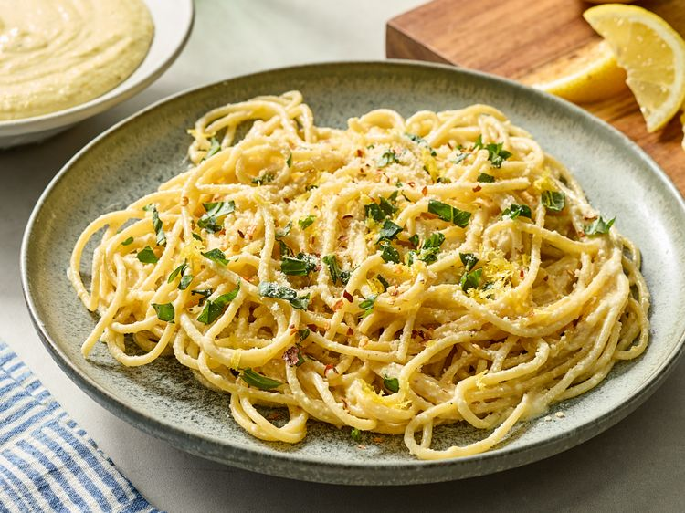

Home
Lemon Pesto

Description
Lemon Pesto is a vibrant, zesty twist on traditional pesto, blending the
fresh, citrusy brightness of lemon with the rich flavors of herbs, nuts,
garlic, and cheese. Typically made with:
This refreshing sauce is lighter than classic pesto, with a clean,
slightly tart finish. It pairs beautifully with pasta, grilled chicken or
fish, roasted vegetables, or as a spread for sandwiches and wraps.
Ingredients
- Fresh basil or parsley
- Lemon juice and zest (for a tangy kick)
- Garlic
- Parmesan cheese
- Nuts like pine nuts, almonds, or walnuts
- Olive oil
Steps
-
Toast the nuts (optional but adds flavor) In a dry skillet over medium
heat, toast pine nuts for 2–3 minutes until golden. Let them cool.
-
Blend the base In a food processor, combine basil, garlic, lemon zest,
lemon juice, and toasted nuts. Pulse until coarsely chopped.
- Add cheese Add the Parmesan and pulse again to combine.
-
Stream in the oil While the processor is running, slowly pour in the
olive oil until smooth and creamy.